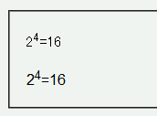
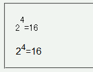

vertical-alignプロパティで表示位置を調整すると、フォントによっては本来の位置より高い位置に文字列が表示されることがある。
<p style="font-family:ＭＳ Ｐゴシック,sans-serif;"> 2<sup style="vertical-align:super;">4</sup>=16</p> <p style="font-family:Arial,sans-serif;"> 2<sup style="vertical-align:super;">4</sup>=16</p>
24=16
24=16
sup要素の位置指定は変えずに、表示フォントを変えています。
WinIE6.0での表示
N6.1での表示
N6.2.3、Moz1.0ともにフォントによる表示位置のずれは発生しています。